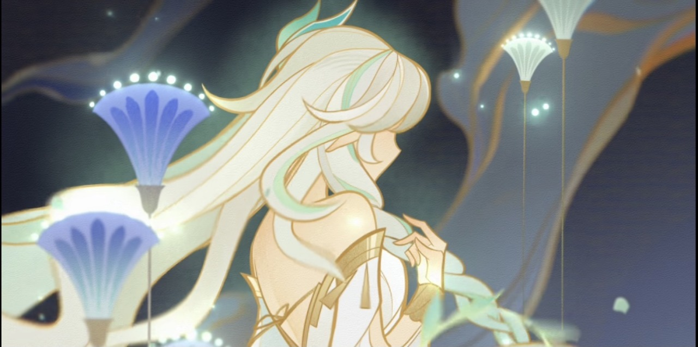

About Kusanali
Lesser Lord Kusanali is the Dendro Archon of Sumeru, also known as the god of wisdom. Her friends call her Nahida. She watches over and protects the people of Sumeru. Though they may have forgotten her, she will never abandon them.
Kusanali's Familiars
The Aranara are the children of the forest. Their power comes from dreams and memories.

Home: Vanarana
Kusanali's Personality Traits
- Childlike
- Curious
- Speaks in metaphors
- Uses the word "dookie"
Kusanali's Friends
The Traveler teamed up with Nahida to investigate the Sages' wrongdoings in Sumeru. Nilou and Dunyarzad are supporters of Lord Kusanali. Nilou performed a dance in her honor.
Kusanali's Enemies
The Sages are endangering citizens by harvesting dreams for nefarious purposes. The Fatui are a dangerous organization who have been causing trouble far and wide. Il Dottore, once expelled from the akademiya, is now the second Fatui Harbinger. He is attempting to transform Scaramouche, another Harbinger, into a new god.
Greater Lord Rukkhadevata
The previous Dendro Archon who ruled before Kusanali. She fell during the Cataclysm around 500 years ago. The people of Sumeru miss her dearly.
